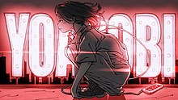

YOASOBI history
YOASOBI（振假名：ヨアソビ）是2019年結成的日本雙人音樂組合，由使用VOCALOID的作曲家的Ayase、以及本業為創作歌手的ikura組成。 2019年11月16日公開《向夜晚奔去》的MV，公開後5個月YouTube播放次數超過了1000萬次，並在2020年10月突破一億次觀看，並進而受邀演出第71回NHK紅白歌合戰的機會。YOASOBI 每一首歌背後都會有一篇原作小說，例如爆紅的《奔向夜空》就是以星野舞夜的獲獎小說《タナトスの誘惑》為原型。YOASOBI 將小說變成音樂的特色，並不是單純地製作主題曲或印象曲，而是由 Ayase 先仔細閱讀小說，再將小說內容和人物以音樂形式表達出來。所以，當聽眾一邊聽歌，一邊看原著小說就有更深體會，也是令日本樂迷為 YOASOBI 歌曲深深著迷的原因之一。
